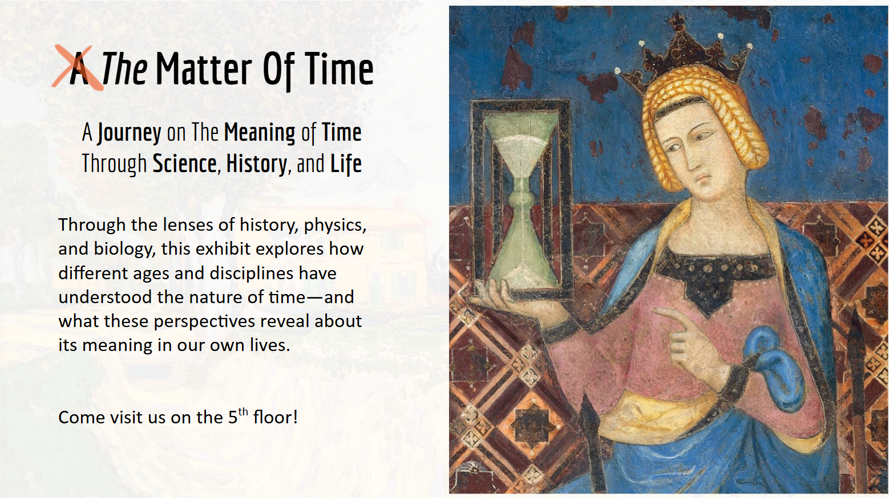

⏱️ The Matter of Time
Home
Panels

Exhibition Media
🎬 Exhibition Video
Trailer video
🎙️ AI Podcast
AI generated podcast narration of the exhibit panels 🤔
Your browser does not support the audio element.